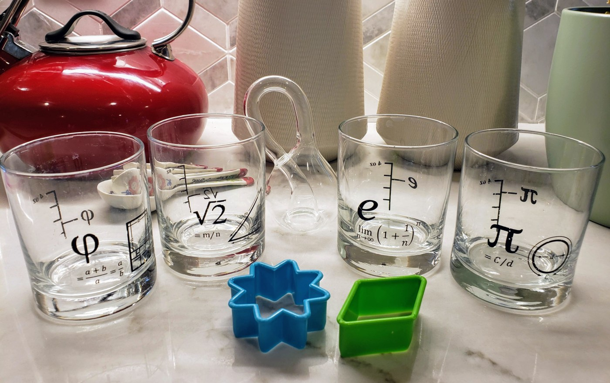
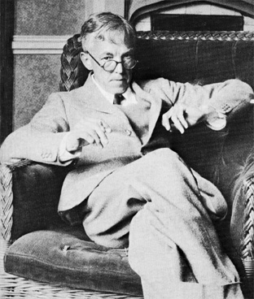
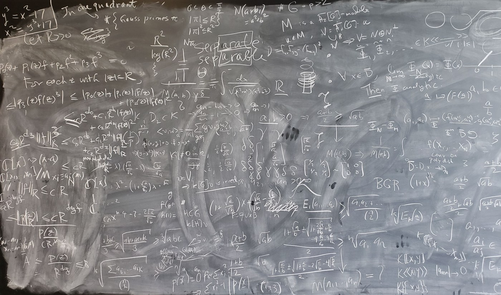

Sometimes a mathematician, while giving a colloquium, a research talk, a public talk, or a calculus lecture, uses metaphors and language from other aspects of life that tickle the imagination. Perhaps my favorite example is the usage of culinary references during mathematical discussions. The mathematician lists the ingredients that go into a proof, describes the recipe to construct a particularly interesting example, mentions the different flavors of proofs available, rolls up the sleeves to get their hands on the problem, boils down the equations and, after cooking up the correct constants, they obtain the desired result. Then it is the audience’s turn to digest the proofs so that, if at all possible, they may be able to regurgitate them in their own words at a later time.
More often than not, I get irrevocably lost in the analogy, and I picture the mathematician in question in an actual kitchen, ready to start their cooking master class. This is typically a very enjoyable experience, assuming that we are in the presence of a highly skilled chef, with many years of experience in their resume (it can be stressful to observe an amateur cook). We will not dwell here on the topic of how a mathematician learns to cook, nor the many mistakes and pitfalls encountered in the pursuit of mathematical fine cuisine. Instead, we shall enjoy the show and mastery of an abstract accomplished chef.

In order to properly set the stage for the full effect of the analogy, we need to know what kind of a mathematical cook we are about to observe. Some cooks are extremely messy. Their methods are unexpected, confusing at times, and often disorganized. Nonetheless, to the delight of the dinner guests, the end result is often times extraordinary and everyone is in awe of the rich flavors that seemed to come out of nowhere. Other cooks, in stark contrast, are highly methodical, their recipes are well-organized, and they set up a clear and straight path from beginning to end, so the audience can follow along, and even reproduce the recipe if need be. Everyone knows what to expect, and there are no surprises. Nevertheless, the guests are equally impressed when the dinner is served and everyone is able to taste the delicious morsels that have been prepared for us. This type of cooking can be, however, dangerously deceiving. Indeed, the master chef has made the cooking look so suspiciously simple that when the untrained cook decides to replicate the achievement, they soon run into the sobering realization that the recipe is far more complicated than they ever thought. As the old adage goes, the devil is in the details!
I am, however, in favor of a teaspoon of this and a pinch of that. By this, I mean that I prefer cooks who set up a well-organized cooking plan, but they throw curveballs (borrowing terminology from baseball) along the way, and hide a couple of aces up their sleeves (borrowing terminology from poker), to keep the dinner guests on their toes. These unexpected ingredients and techniques help the eager audience realize that we are not just proving the good ol’ sandwich theorem for the n-th time. On the contrary, we are witnessing the elaboration of a brand new recipe that will impress the most demanding mathematical palates. Of course, this style is not everyone’s cup of tea: to each their own.
Once we have an idea of what kind of a cook we are in the presence of, it is time to look around to see what sort of a kitchen we are in. Just like cooks, kitchens come in all types and shapes, and the reader can surely guess what kind of a kitchen surrounds each type of chef described above. Instead, I will describe the kitchen I have in mind. This is a community kitchen that we all share. It is a familiar place, warm and welcoming. The air is impregnated with the fragrance of a number of old and new spices, and the scent of old wood and cast iron pans. The room is large but cozy, clearly built long ago, and it has been generously expanded after each generation of mathematical cooks. Standing in front of the stove is truly inspiring, even a bit overwhelming, due to the long history of magnificent cooks that have worked in this very same kitchen, over centuries, perhaps millennia.
At the far end of the room, the wall has a large built-in wooden bookcase, “chalk-full” of recipe books (many with yellow spines), printed articles, and piles and piles of pages containing hand-written notes. Numerous cooks have generously written their most innovative recipes in a luxury of detail, in many cases illustrated with practical examples and helpful diagrams of the best way to cook the ingredients for optimal results. Other cooks have spent countless hours trying to simplify some of the messiest recipes left behind, until they have reached extremely refined and perfected recipes, that future generations will be able to digest easily and quickly (these efforts are often not praised as they should be, so thank you to those that have spent much of their lives in this labor of love). A prominent shelf is reserved for those classic books that have a special place in the hearts of the cooks in our profession. Some of these volumes are ancient, and serve little practical purpose nowadays. Nonetheless, the good cook browses the crumbling pages from time to time to get a whiff of inspiration from the marvelous works of the old masters. Other volumes are new classics that any cook worth a dime would do well to spend time studying, for they contain ingenious tricks and techniques that may be applied in many different kinds of recipes.
Relatively recently, we installed a desk next to the bookcases, with a computer terminal. It is not very visually appealing next to the beautifully bound books but, admittedly, it is highly efficient and convenient. Thousands, if not millions, of recipes are now available at our fingertips after a few keystrokes, and that is all good and well, but nothing can replace the experience of sitting in an old comfy chair and perusing a heavy book. The iconic image of G. H. Hardy smoking while sitting in a sofa chair comes to mind (smoking is no longer allowed in the kitchen, though). Luckily, Hardy’s large velvet chair is right there next to the wooden bookcase in case the cook needs a break to consider the plan of attack for the next meal.

Something is sorely missing, however, that cannot be found (or, at the very least, is a rare find) using the computer, or the books and papers on the shelves: all those attempts that ended up in culinary disaster. There is little room on our shelves for those combinations of ingredients, flavors, and cooking techniques that resulted in an inedible meal. Of course, many of these efforts are not worth remembering but, in many situations, a cook in training would greatly benefit from learning from others’ mistakes, so they are not repeated ad infinitum. Alas, we have yet to find a way to compile our fruitless research in a useful format.
This kitchen would simply not work without the ample blackboard that is installed on the wall next to the library wall. The board has a little shelf at the bottom, more of a lip, where we keep as much chalk as we are able to fit, Hagoromo while supplies last, mostly white but also some colored chalk, some thick chalk, and some good quality erasers. On August 8th of the year 1900, David Hilbert drew a vertical line on the board, and on the left side he wrote a shopping list of tantalizing conjectures. Since that day, others have added similarly intriguing items to the list (for example, the folks at the Clay Math Institute added a few in the year 2000). From time to time, someone manages to erase the name of a conjecture from the shopping list, and the rest of us cheer in unison. The right side of the board is where the cooks think on their feet, so it is typically a glorious mess of symbols, equations, diagrams, and random doodles.

The cabinets in the kitchen consist of many drawers and pigeonholes that contain a plethora of utensils. These are the techniques that are at our disposal while we cook. Some are brand new and shiny, and some are old and worn out, but they work just the same. The drawers that are closer to the stove keep the basic tools that we use all the time. The label on one of these drawers reads Calculus and, on any given day, there are about one thousand college freshmen trying to make sense of the items in the drawer, although they might never learn how to cook anything with it. For one or two semesters, they simply make noise with the knives and forks within, and then they leave the kitchen never to return, with a bad taste in their mouth, without even having fried an egg. Oh well.
To be honest, some of the kitchen drawers are an embarrassing mess. A few times in history, teams of cooks have tried to organize these tools in some logical fashion but, essentially, they got as far as organizing the teaspoons and then they had to stop because there were too many types of teaspoons. As a result, cooking in this kitchen is not a trivial task. The only way to become proficient at it is to spend many hours looking through the drawers, getting acquainted with their contents, trying out some of our tools on easy recipes, and then spend many more hours as a sous-chef watching and helping other experienced cooks prepare a dinner.
In a corner, not far from the stove, there is a “lazy Susan” that was installed in the 1700’s. In this convenient rotating rack we keep all our mathematical spices. There are several levels and each one corresponds, roughly, to one of our most common flavors: a level for algebraic spices, one for the analytic spices, plenty of space for the geometric flavors, a region reserved for the topologically inclined, a positive percentage for the probabilistic taste, and, in a very accessible spot, the essential logic spices that are the salt-and-pepper tying our cuisine together. Many of us are not well-versed in the art of mixing these spices, and our dishes are typically boxed in a rather narrow flavor. However, some internationally renowned chefs are capable of cooking in vastly different styles, and are able to successfully mix flavors to achieve an exquisite feast that may cross out one of the many items on our shopping list of conjectures. Some famous chefs evolved over time, began cooking in one style in their youth, experimented with exotic flavors at their most prolific stage, and ended their career as experts in a completely different cuisine from where they started. These versatile chefs come to mind when I visit an art museum to see an exhibit about a great painter and their various art periods, and I wonder what a retrospective exhibit about Gauss’ art would look like… but I digress into a different analogy altogether.
Incidentally, Thomas Jefferson, who once said that “when I was young, Mathematics was the passion of my life”, might have invented the “lazy Susan” for his daughter, Susan.
Finally, the kitchen is equipped with a full pantry, which is diligently stocked with all sorts of fresh and canned goods. One can walk into the pantry and get lost admiring the shelves and baskets of ingredients at our disposal: numbers, rings, fields, algebras, sets, spaces, varieties, sheaves, functions, functionals, functors, categories, etc. Some of these elements have been around for thousands of years, while some other ones have been discovered in the last few decades and, only recently, the most ingenious of cooks are beginning to understand how to prepare these new varieties of mathematical produce. Perhaps the most interesting items in the pantry are on the farthest wall, on a shelf that is strangely hard to reach. These are the objects that may or may not exist, and no one has been able to decide if these ingredients are actually viable given what we know. Also on this rather bizarre shelf are those objects that we know exist, some at our disposal, but we do not know if there are infinitely many of them (that is, this type of produce may be in very limited supply). Nonetheless, the advanced mathematical chef can cook with all of these mysterious items anyway, and create a speculative meal that may or may not fill up our stomachs.
When a lecture begins, our favorite cooks will walk us through the time they spent walking around the kitchen, browsing some cookbooks, perusing some old papers, surfing the internet for the latest recipes, playing around with some utensils, coming up with a plan on the trusty blackboard, grabbing all the necessary ingredients from the pantry, and washing and preparing them on the cutting board for human consumption. If we are lucky, we will hear what mistakes were made along the way, and what cooking techniques yielded no results. And, by the end of the talk, we will be satisfied, surprised, and amazed by the theorems, because we have been in that kitchen, we are aware of those books and those loose pages, we have tried those tools ourselves, and we have tasted those ingredients. The master chef, though, ingeniously combined all of these tools and ingredients to discover something completely new that we did not know was there all along, and best of all, a new set of tools has been laid out in front of us, so that we can use them the next time we are in our mathematical community kitchen.